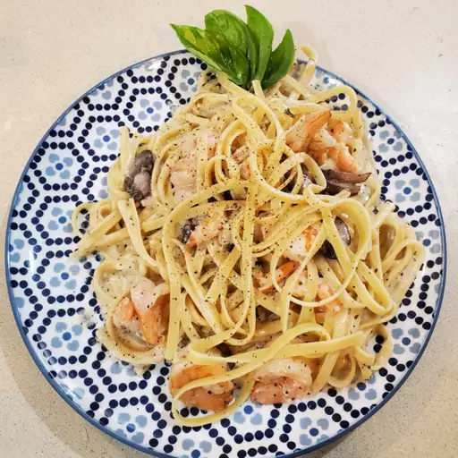

Shrimp and Mushroom Linguini with Creamy Cheese Herb Sauce

This recipe is a 'gift from the gods.' You can easily substitute the shrimp and mushrooms for something else.
Ingredients
- 1 (8 ounce) package linguini pasta
- 2 tablespoons butter
- ½ pound fresh mushrooms, sliced
- ½ cup butter
- 2 cloves garlic, minced
- 1 (3 ounce) package cream cheese
- 2 tablespoons chopped fresh parsley
- ¾ teaspoon dried basil
- ⅔ cup boiling water
Steps
- Bring a large pot of lightly salted water to a boil. Add linguini and cook until tender, about 7 minutes. Drain.
- Meanwhile, heat 2 tablespoons butter in a large skillet over medium-high heat. Add mushrooms; cook and stir until tender. Transfer to a plate.
- In the same pan, melt 1/2 cup butter with the minced garlic. Stir in the cream cheese, breaking it up with a spoon as it melts. Stir in the parsley and basil. Simmer for 5 minutes. Mix in boiling water until sauce is smooth. Stir in cooked shrimp and mushrooms; heat sauce through.
- Toss linguini with shrimp sauce and serve.
Return to list of recipes